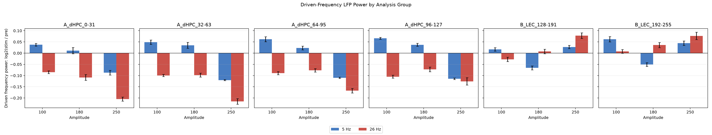
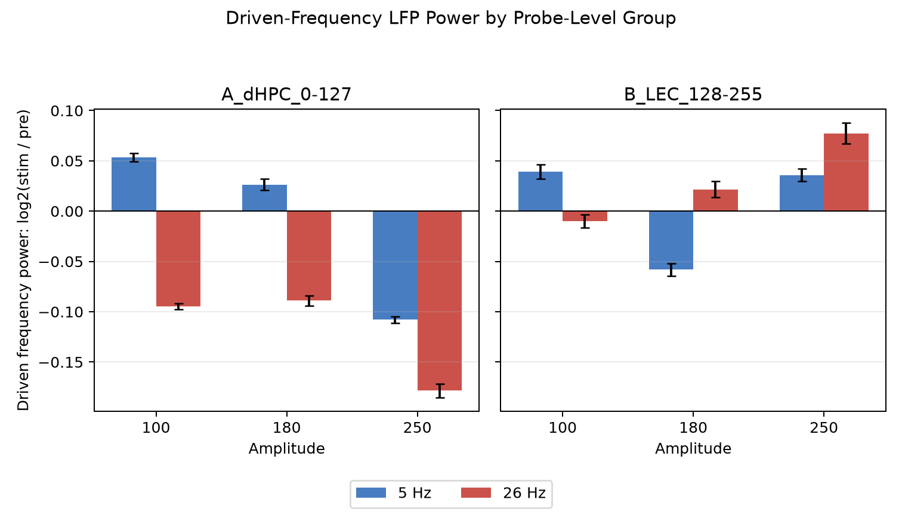
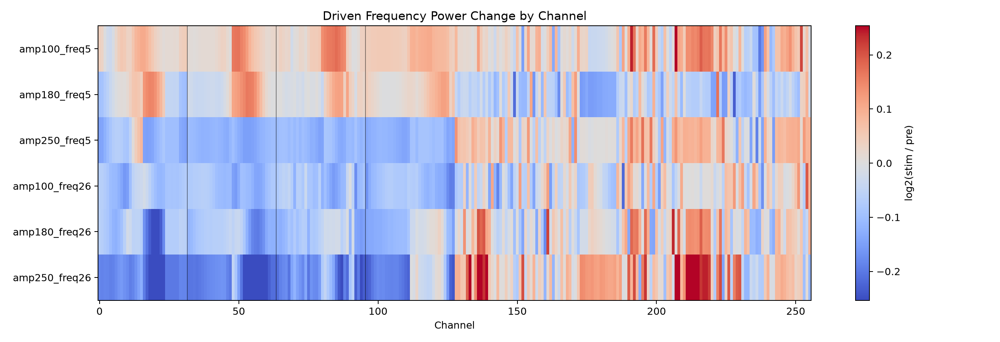
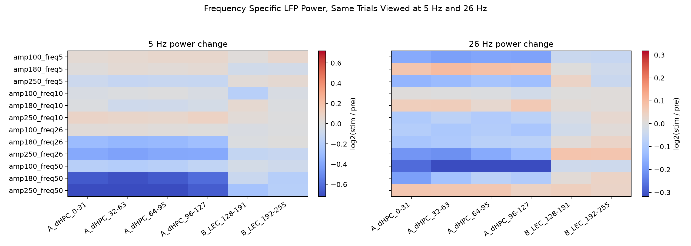

Pre and stim windows are each 2.8 s. Stim window starts 0.1 s after onset to avoid onset artifact.
Values are log2(stim power / pre power). Positive values mean power increased during stimulation.



